Con el panel tú mismo cambias lo que sale en la página de la emisora: cantantes, programas, anuncios, anunciantes, teléfono y redes. También ves los pedidos de canciones y los comentarios de los oyentes. No hace falta saber de computadoras.
Dirección del panel: alegriastereomusical.com/admin
1Entrar al panel
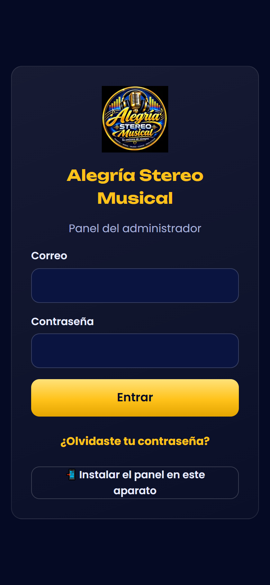
La pantalla para entrar al panel.
Abre el navegador del celular (Chrome o Safari).
Arriba, donde se escriben las direcciones, pon: alegriastereomusical.com/admin
En Correo escribe tu correo: alegriastereomusical@gmail.com
En Contraseña escribe tu contraseña.
Toca Entrar.
Bueno saberNormalmente el celular te recuerda. La próxima vez que abras el panel, entras directo sin escribir nada.
CuidadoSi sale «El correo o la contraseña no son correctos», revisa que no haya un espacio de más y que las letras estén bien. Si no te acuerdas, mira la parte 3.
Para salir
Abre el menú (las tres rayitas ☰ de arriba a la izquierda) y toca Salir, al final. Hazlo siempre si usaste un celular o una computadora que no es tuya.
2Instalar el panel en tu celular o computadora
Así el panel queda como un botón más, igual que WhatsApp, y abre directo sin escribir la dirección. Se llama «Panel Alegría».
La forma fácil
Abre el panel como en la parte 1.
Toca el botón 📲 Instalar el panel en este aparato (está debajo de «Entrar»), o abre el menú ☰ y toca Instalar el panel.
En Android y en computadoras con Chrome o Edge sale un aviso: toca Instalar.
En iPhone el panel te dice los pasos (abajo están también).
Si tu celular es iPhone (Safari)
Abre el panel en Safari.
Toca el botón de compartir (el cuadrito con la flecha hacia arriba ⬆).
Baja y toca Agregar a inicio.
Toca Agregar.
En una computadora con Windows
Abre el panel en Edge o Chrome.
Toca Instalar el panel en el menú y luego Instalar. Queda en el menú de Inicio y en la barra de tareas.
Bueno saberLos oyentes también pueden instalar la emisora desde la página: botón Instalar la app (arriba en la computadora, en el menú del celular y en la parte de Contacto). Son dos aplicaciones distintas: «Alegría Stereo» para escuchar y «Panel Alegría» para manejar la página.
3Si olvidas la contraseña
En la pantalla de entrar, escribe tu correo en Correo.
Toca ¿Olvidaste tu contraseña? (debajo del botón Entrar).
Sale el aviso: «Te enviamos un correo con un enlace para crear una contraseña nueva».
Abre tu Gmail. Si no ves el correo, búscalo en Spam.
Toca el enlace del correo. Se abre el panel con la pantalla Nueva contraseña.
Escribe la contraseña nueva en Nueva contraseña y otra vez en Repítela. Debe tener mínimo 8 letras o números.
Toca Guardar contraseña. Listo, ya estás dentro.
Tu contraseña es solo tuyaNo se la des a nadie, ni la mandes por WhatsApp. Anótala en un lugar seguro. Si la contraseña te la creó otra persona, cámbiala con estos mismos pasos para que solo tú la sepas.
4El menú
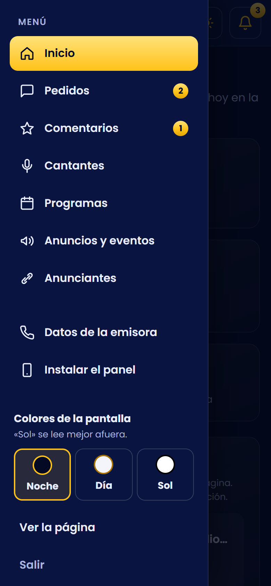
El menú abierto en el celular (☰).
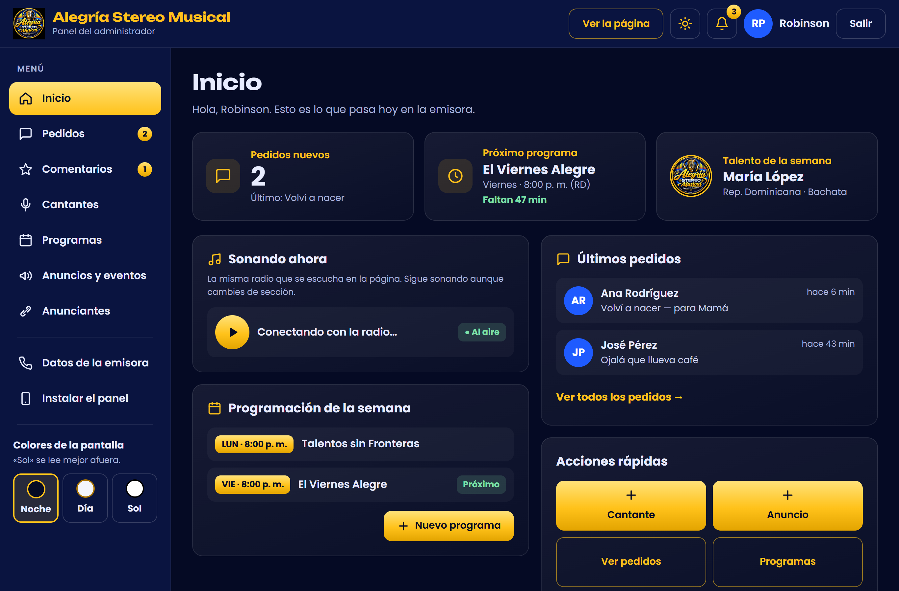
En la computadora el menú se ve siempre a la izquierda.
En el celular, toca las tres rayitas ☰ de arriba a la izquierda. Se abre el menú con estas partes:
Botón
Para qué sirve
Inicio
Un resumen de lo que pasa hoy.
Pedidos
Canciones y saludos que piden los oyentes.
Comentarios
Lo que escriben los oyentes sobre la emisora.
Cantantes
Los artistas que salen en la página.
Programas
Los programas, sus días y horas.
Anuncios y eventos
Noticias, avisos y eventos.
Anunciantes
Logos de los negocios que apoyan la emisora.
Datos de la emisora
Teléfono, WhatsApp, correo y redes.
Colores de la pantalla
Noche, Día o Sol (parte 13).
Ver la página
Abre la página pública para ver cómo quedó.
Salir
Cierra el panel.
La campanita 🔔Arriba hay una campanita. Si tiene un número, hay pedidos nuevos o comentarios por revisar. Tócala y te lleva a ellos. Al lado de Pedidos y Comentarios en el menú también sale el número.
5Inicio
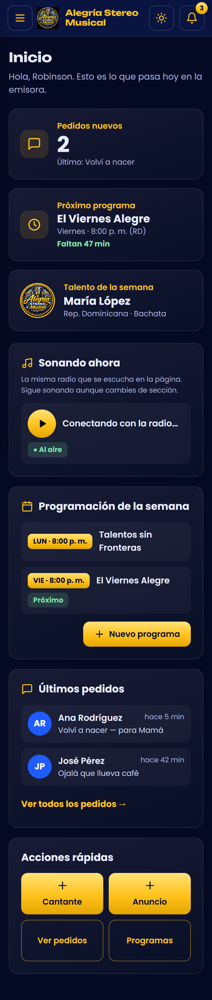
La pantalla de Inicio (los nombres son de ejemplo).
Es la primera pantalla. Aquí ves de un vistazo:
Pedidos nuevos: cuántos hay sin atender y cuál fue el último. Tócalo para verlos.
Próximo programa (o Al aire ahora): cuál sigue y cuánto falta, en hora de RD.
Talento de la semana: el cantante que marcaste con la estrella.
Sonando ahora: la canción que está sonando en la radio. Es solo para mirar.
Programación de la semana y Últimos pedidos.
Acciones rápidas: botones para agregar un cantante o un anuncio de una vez.
6Pedidos de canciones
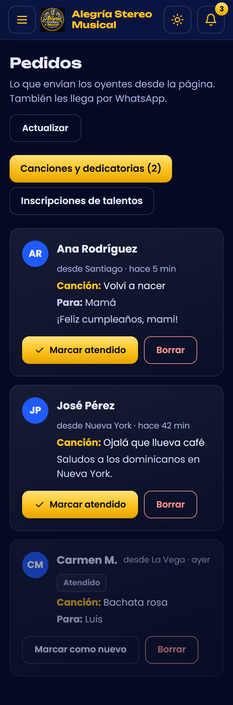
Lista de pedidos (de ejemplo).
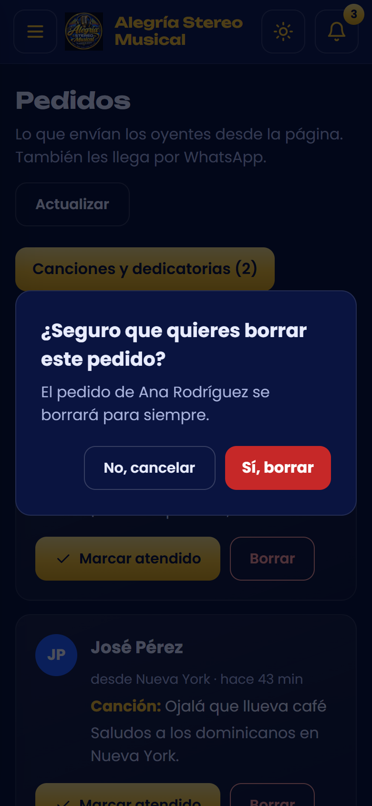
Antes de borrar, el panel siempre pregunta.
Cuando un oyente pide una canción o un saludo en la página, te llega por WhatsApp y también queda guardado aquí. Los oyentes no pueden ver los pedidos de otros; solo tú.
Cada pedido muestra el nombre, desde dónde escribe, la canción, para quién es y el saludo.
Cuando ya lo pusiste al aire
Toca Pedidos en el menú.
Busca el pedido y toca ✓ Marcar atendido.
El pedido se pone gris y dice «Atendido». Si te equivocaste, toca Marcar como nuevo.
Para borrar un pedido
Toca Borrar en ese pedido.
Te pregunta si estás seguro. Toca Sí, borrar. Si no, toca No, cancelar.
Lo borrado no vuelveCuando borras algo, se borra para siempre. Si tienes duda, mejor márcalo como atendido.
Para ver si llegaron pedidos nuevosToca Actualizar arriba a la derecha. La pestaña Inscripciones de talentos por ahora queda vacía: los artistas que quieren participar te escriben directo por WhatsApp.
7Comentarios de los oyentes
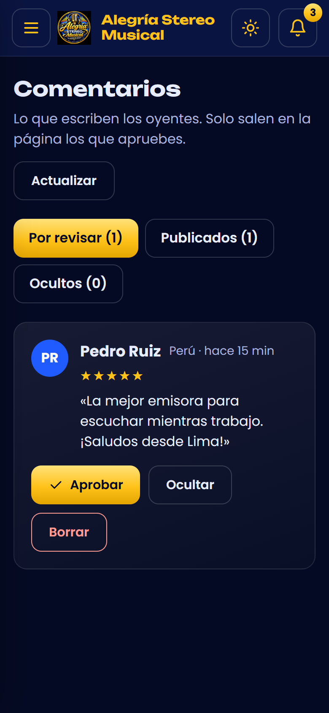
Comentarios por revisar (de ejemplo).
Los oyentes pueden dejar un comentario en la página, con su nombre, su país y estrellas. Ningún comentario sale en la página hasta que tú lo apruebes. Así nadie puede poner groserías ni cosas feas.
Hay tres pestañas:
Pestaña
Qué hay ahí
Por revisar
Los comentarios nuevos que todavía no has visto.
Publicados
Los que aprobaste. Estos sí salen en la página.
Ocultos
Los que decidiste no mostrar.
Qué puedes hacer con cada comentario
✓ Aprobar: el comentario sale en la página.
★ Destacar: sale de primero en la página, con borde dorado. Solo aparece en los ya aprobados. Para quitarlo, toca Quitar destacado.
Ocultar: el comentario no sale en la página, pero lo guardas.
Borrar: se borra para siempre (te pregunta antes).
Paso a paso
Toca Comentarios en el menú. Se abre en Por revisar.
Lee el comentario.
Si está bien, toca Aprobar. Si no te gusta, toca Ocultar o Borrar.
Bueno saberEn la página salen los últimos 9 comentarios aprobados, primero los destacados. Si un comentario oculto lo quieres publicar después, ve a Ocultos y toca Aprobar.
8Cantantes
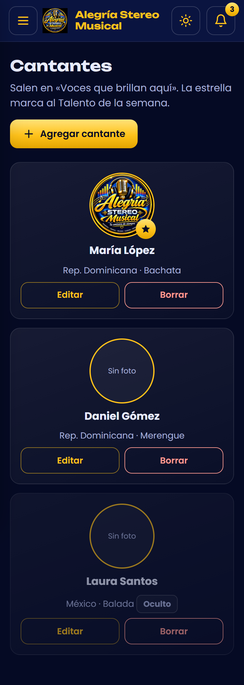
Lista de cantantes: la estrella es el Talento de la semana.
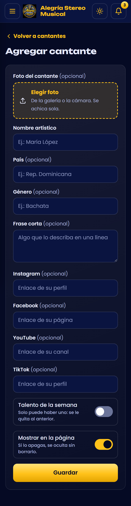
Formulario para agregar un cantante.
Los cantantes salen en la página en la parte «Voces que brillan aquí». Si no hay ninguno, esa parte no aparece.
Antes de publicar a un artistaPídele permiso para poner su foto y su nombre en la página. Lo mejor es que te lo diga por WhatsApp, así queda escrito.
Agregar un cantante
Toca Cantantes en el menú.
Toca + Agregar cantante.
En Foto del cantante, toca Elegir foto y escoge la foto de tu galería, o tómala con la cámara.
Escribe el Nombre artístico. Es lo único obligatorio.
Si quieres, llena País, Género (bachata, merengue…), Frase corta, y los enlaces de su Instagram, Facebook, YouTube y TikTok.
Toca Guardar. Sale «Guardado» y ya está en la página.
Talento de la semana ⭐
Abre al cantante con Editar.
Prende el botón Talento de la semana.
Toca Guardar. Sale en grande arriba de todos, y en el panel lo ves con una estrella.
Solo puede haber uno a la vez. Cuando marcas a uno nuevo, al anterior se le quita solo.
Esconder a un cantante sin borrarlo
Abre al cantante con Editar, apaga Mostrar en la página y toca Guardar. Ya no sale en la página, pero sigue guardado en el panel con la marca «Oculto». Para que vuelva a salir, prende el botón otra vez.
Cambiar o borrar
Para cambiar algo: Editar → cambias → Guardar.
Para cambiar la foto: en Editar, toca Elegir foto y escoge otra. Para quitarla: Quitar foto.
Para borrarlo para siempre: Borrar → Sí, borrar.
9Programas
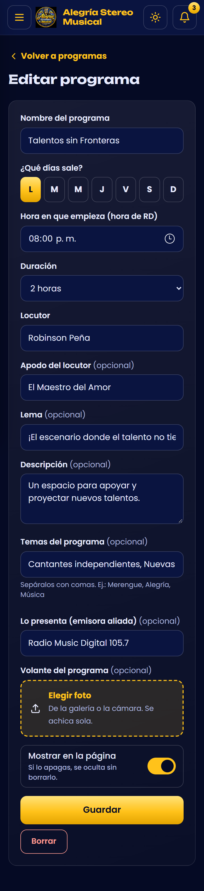
Editar un programa: días, hora, duración y volante.
Lo que pongas aquí sale en «Nuestros programas» de la página. La página calcula sola cuál está al aire ahora, cuál es el próximo, y la hora en otros países.
Agregar o cambiar un programa
Toca Programas en el menú.
Toca + Agregar programa, o Editar en uno que ya existe.
Escribe el Nombre del programa.
En ¿Qué días sale? toca las letras de los días: L (lunes), M (martes), M (miércoles), J, V, S, D (domingo). Los días marcados se pintan. Toca otra vez para desmarcar.
En Hora en que empieza pon la hora de República Dominicana. La página la cambia sola para los oyentes de otros países.
En Duración escoge cuánto dura: de 30 minutos a 5 horas.
Revisa el Locutor (ya viene «Robinson Peña») y el Apodo del locutor.
Si quieres, llena Lema, Descripción, Temas del programa (separados con comas) y Lo presenta (emisora aliada).
En Volante del programa toca Elegir foto para subir el volante (el afiche del programa).
Toca Guardar.
Ojo con los horarios que chocanEl panel no te avisa si dos programas caen a la misma hora el mismo día. Si eso pasa, la página se confunde con cuál está «al aire». Antes de guardar, mira la lista y fíjate que no se crucen.
Para quitar un programa por un tiempoApaga Mostrar en la página y guarda. Cuando vuelva, lo prendes otra vez.
10Anuncios y eventos
Lista de anuncios (de ejemplo).
Noticias, avisos y eventos de la emisora. Salen en la página en «Lo que viene», y arriba en el menú de la página aparece «Eventos».
Toca Anuncios y eventos en el menú.
Toca + Agregar anuncio.
Escribe el Título (obligatorio) y el Texto con los detalles.
Si es un evento, pon la Fecha del evento.
Si quieres, sube una Foto del anuncio y pon un Enlace para más información.
Toca Guardar.
Los eventos se quitan solosSi le pones fecha, el anuncio se ve en la página hasta el mismo día del evento. Al día siguiente ya no sale (sigue guardado en el panel). Los anuncios sin fecha se quedan en la página hasta que tú los escondas o los borres.
11Anunciantes
Los logos de los negocios que patrocinan la emisora. Salen en la página en «Gracias a quienes nos apoyan». Si no hay ninguno, esa parte no aparece.
Toca Anunciantes en el menú.
Toca + Agregar anunciante.
En Logo o banner toca Elegir foto y escoge el logo.
Escribe el Nombre del negocio.
Si quieres, pon un Enlace: su página, su Instagram o su WhatsApp.
Toca Guardar.
Cuando un negocio deje de anunciarse, apaga Mostrar en la página o bórralo.
12Datos de la emisora
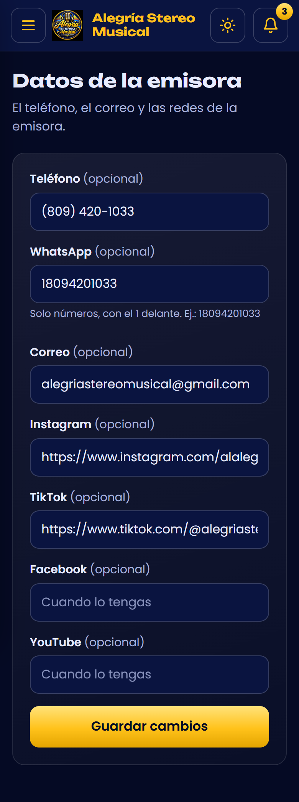
Teléfono, WhatsApp, correo y redes.
El teléfono, el WhatsApp, el correo y las redes que salen en la página.
Toca Datos de la emisora en el menú.
Cambia lo que necesites.
Toca Guardar cambios.
Dato
Cómo escribirlo
Teléfono
Como se lee, por ejemplo: (809) 420-1033
WhatsApp
Solo números, con el 1 delante y sin espacios ni rayitas. Ejemplo: 18094201033
Correo
El correo de la emisora.
Instagram, TikTok
El enlace completo del perfil.
Facebook, YouTube
El enlace completo, cuando los tengas.
Facebook y YouTube aparecen solosCuando pongas el enlace de Facebook o de YouTube y guardes, el botón aparece solo en la página. Si dejas una casilla vacía, esa red no se muestra.
Cómo copiar el enlace de una redAbre tu perfil en la aplicación (Facebook, YouTube…), toca Compartir → Copiar enlace, y pégalo en la casilla dejando el dedo apretado → Pegar.
13Colores de la pantalla: Noche, Día, Sol
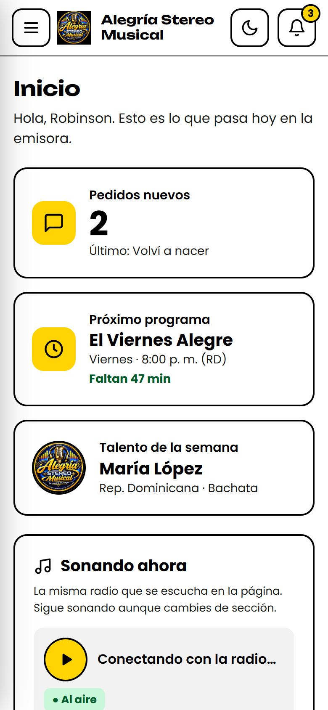
El panel con los colores «Sol», para leer bajo el sol.
Puedes cambiar los colores del panel para verlo mejor. Esto solo cambia tu pantalla, no la página de los oyentes.
Noche: fondo azul oscuro. Bueno para de noche.
Día: fondo claro.
Sol: blanco y negro bien fuerte. Se lee mejor afuera, con sol.
Escógelo en el menú, en Colores de la pantalla. O toca el botón del sol / la luna de arriba: cada toque cambia al siguiente. Tu celular lo recuerda para la próxima vez.
14Las fotos
Sube la foto tal cual sale de tu celular. El panel la achica sola para que la página cargue rápido.
Después de elegirla, la ves en pequeño. Si no es la que querías, toca Quitar foto o Elegir foto otra vez.
La foto se sube cuando tocas Guardar. El botón dice «Subiendo foto…»: espera a que salga «Guardado» y no cierres la pantalla.
Usa fotos claras, derechas y con buena luz.
15Si algo falla
Prueba esto en orden:
Revisa el internet. Mira que tengas datos o Wi-Fi. Abre otra página (por ejemplo Google) para probar.
Recarga la página. Desliza la pantalla hacia abajo desde arriba, o toca la flechita circular ⟳ del navegador.
Si sale «No se pudo guardar. Revisa tu internet e intenta de nuevo.», espera un momento y toca Guardar otra vez. Lo que escribiste sigue ahí.
Si sale «No se pudo cargar la información», toca Intentar de nuevo.
Cierra el navegador del todo y ábrelo de nuevo.
Si nada de esto funciona, avísale a Jonathan. Mándale una captura de pantalla de lo que ves y dile qué estabas haciendo.
Si la radio no suena en la páginaLa señal de la radio viene de Zeno.fm. Revisa primero que la emisora esté transmitiendo en Zeno.
Si la página no muestra lo que pusiste en el panel(cantantes, anuncios, comentarios), avísale a Jonathan. Puede ser que el servicio donde se guardan los datos se haya pausado por falta de uso, y se arregla rápido.
¿Necesitas ayuda?
Jonathan Santiago — diseño y desarrollo de la página.